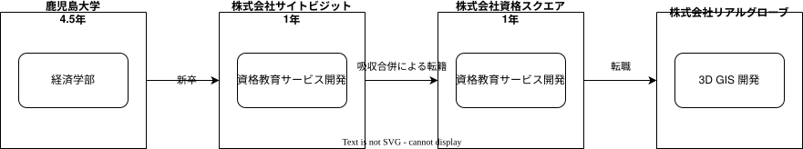

History
技術スタック
メインでバックエンドサーバ開発、サブでインフラ領域まで業務を行ってきた。今後もバックエンド領域に注力していこうと考えている。
OSS活動
- MELPA, Rubygems, npm, Go Packagesでのソフトウェア公開
- 各種OSSへのコントリビュート
職務経歴詳細
経歴の全体像を示す。

Figure 1: 経歴の全体像
会社ごとに、参加したプロジェクトを列挙する。
株式会社リアルグローブ(2022-11 ~ 現在)
| 概要 | 3D GISの開発(3DのGoogleMap的なもの) |
| 背景 | 開発元企業に出向し、自治体などに納入する3D GISのデスクトップを開発した |
| フェーズ | 開発 → 自治体への納入 → 運用および追加開発 |
| チーム規模 | バックエンド1人(自分)、他社数社のフロントエンド開発者5~10人、開発元会社のPM1~2人 |
| 制約 | クラウドサービス使用不可(AWS, GCP, GitHub)、本番環境でのインターネット接続不可 |
| 担当範囲(横) | バックエンドサーバ開発、ランチャー開発 |
| 担当範囲(縦) | 要件定義、設計、コーディング、テスト、レビュー |
| 使用技術 | Go, Linux, Windows, PostgresQL, Apache, GitHub Actions |
| 期間 | 2022-12 ~ 現在 |
- 開発元会社の既存製品の3D GISの仕様をもとに、新しくWebアプリケーションを開発する業務
- バックエンドサーバ(Go)まわりを単独でシステム設計、実装、運用
- 例…
- 権限
- 認証
- ブックマーク
- 地物の絞り込み検索
- エクスポート
- ファイルアップロード
- 静的ファイル配信
- ※3D GISに必要な地物ファイル読み込み、描画や計測などの機能はすべてフロントエンド(Unity)がもっており、バックエンドサーバは地物データの内容と関与しない構成となっている。チーム構成が歪なのはそのため
- フロントエンドが生ファイルを取得し、描画する構成。バックエンドサーバはURLその他の管理データの保存を担当する
- ※インフラ部分については他部署で一括作成されており、一切の設定閲覧や変更はできない
苦労したこと。
- 自治体向け製品の制約(LGWAN)で、本番環境はインターネットに出られない。したがってマネージドサービスなどは使用できない
- コードレビュー相手がいないためセルフレビュー
- 非IT業界・大企業のセクショナリズム下における開発環境
アピールポイント。
- 高いテストカバー率
- プロダクトの要件により、クロスプラットフォーム(Linux, Windows)、マルチDB(SQLite, PostgreSQL)対応。CIによって、複数の組み合わせでの安定動作を達成した
- ランチャーの結合テストとしてシェルスクリプトでもテストを書いた。CIでWindowsでテストして検証できるようにした
- Webに知見のある開発メンバーがいなかったので、Web方面でリードした
- OpenAPIでスキーマ駆動開発をリードした。常に実装と一致するようにCIを設定していた
- 開発元の製品開発の責任者と頻繁に会議を企画した。会議に加えて文書による合意を常にとり、トラブルや認識ミスが発生しなかった
- 積極的に背景理解のための質問をし、ビジネスを含めた文脈や制約を理解したうえで提案・作業を行った
- 納品を遅延なく完了した
株式会社資格スクエア(2021-12 ~ 2022-08) ⚠ 会社分割による移籍で、業務内容は変わっていない
| 概要 | 資格教育サービスの開発 |
| 背景 | 難関資格取得を目指す顧客の勉強や添削をサポートするサービス |
| フェーズ | 保守、機能追加 |
| チーム規模 | 5人程度 |
| 制約 | 会社分割/チーム縮退のため部分的に知見のある開発者がいない部分がある |
| 担当範囲(横) | バックエンド、インフラ |
| 担当範囲(縦) | 設計、コーディング、テスト、レビュー |
| 使用技術 | Ruby on Rails, ECS, EC2, GitHub Actions |
| 期間 | 2021-12 ~ 2022-08 |
会社分割による、株式会社サイトビジットからの移籍。業務内容は変わらない。
- プロジェクト
- マイページをリプレイス(5人程度のチーム)
- リプレイスのベースとなる部分のAPI担当
- 本番サービスコンテナ移行(単独)
- 稼働中のRailsサービスをEC2 → ECSへ移行した
- 数年間EC2インスタンスで稼働していたRailsサービス
- CI/CDも含めて切り替え
- ダウンタイム・障害なし
- サービスのメイン機能リプレイス(5人程度のチーム)
- API担当
- マイページをリプレイス(5人程度のチーム)
- 特筆事項
株式会社サイトビジット(2020-10 ~ 2021-12)
| 概要 | 資格教育サービスの開発 |
| 背景 | 難関資格取得を目指す顧客の勉強や添削をサポートするサービス |
| フェーズ | 保守、機能追加 |
| チーム規模 | 8人程度 |
| 制約 | サービス開始から数年経過し、部分的に負債が溜まっている部分がある |
| 担当範囲(横) | バックエンド、インフラ |
| 担当範囲(縦) | 設計、コーディング、テスト、レビュー |
| 使用技術 | Ruby on Rails, ECS, EC2, GitHub Actions |
| 期間 | 2020-10 ~ 2021-12 |
テンプレート
| 概要 | |
| 背景 | |
| フェーズ | |
| チーム規模 | |
| 制約 | |
| 担当範囲(横) | |
| 担当範囲(縦) | |
| 使用技術 | |
| 期間 |
業務の詳細。
苦労したこと。
アピールポイント。
どうなりたいか
どういった職業キャリアを考えているかを示す。
職業キャリアは、めざす「職種 x 専門領域」で表現できると考えている。どの山に登るかと、どの峰を目指すか。
職種。自分の中でだいたい決まっている。
MUSTプログラマー(専門職)- 数年間実際に手を動かして開発してきて、楽しさ、やりがいを感じているから
- プライベートでの趣味と仕事を相互に活かせるから。何かを作るのが好きである
SHOULDバックエンドプログラマー(必要であれば何でも学んでやる)- 今までバックエンド開発をやってきて経験と実績がある。安定して価値を提供できる可能性が高い
- 見えない業務ロジックを明らかにしていくことを楽しく感じる
専門領域。まだ曖昧である。
MUST専門領域の形「T型」専門領域の形状は決まっている。専門領域の広さを持ったうえで、そのなかで1つコアな(興味と実績のもっともある)分野を持ったプログラマになりたい。まだ専門領域の位置は決まっていない。
ここでいう「分野」の 例 。
- 「高トラフィック対応に強い」
- 「動画配信技術に強い」
- 「WASMに強い」
- 「レイヤの境界線(OS - ミドルウェア間など)の不具合を解決できるスキルがある」
コアな分野を持ちたい理由。
- 難しい問題に取り組める可能性が高くなる
- 文脈を理解したうえで最先端を追ったり作っていくのはやりがいがありそう
専門領域は、すぐに得られない。段階を踏んで形成する必要があるように見える。
- 難しい、興味の持てる仕事や学習をする (👈今ここ。プライベートも多く含む)
- 実際にやっていくうちに、興味や縁によって「分野」が いつのまにか 決まっていく
- 1つ強い分野を持つプログラマとして縦横をさらに深めていく
というステップになるだろうと考えている。詳細に計画できるものだとはみなしていない。キャリアの全体観の中で、今の段階はまだ<1>である。
深めるための下準備として、コンピュータの基礎的な仕組みについてプライベートで勉強している。
会社選びの軸
軸は、じゅうぶんに振るい落とせるものでなければならない。
MUST開発経験を活かせる- バックエンド開発という職種経験や経験のある技術スタックを活かせること
- 成果を安定して出せる可能性が高いから
- 活かしつつ、少しづつより難しい/面白そうな分野に挑戦できるのがベスト
MUST会社として優れた技術力がある- 熱意や優秀さは集団の中で伝播していくと考えている。経験的に、ともに働くメンバーが自分の成長に大きく影響をもたらすことが多い
- 会社やチームとして働き、ナレッジを共有していける体制がある可能性が高い
SHOULDコンピュータ資源や開発技術が商材となる業界や会社理由。
- もっとも興味があり、実際に多くの時間をかけているのがコンピュータである。※今まではそういう認識がなかった
- ビジネスに興味を持ちやすく、自分ごととして理解しやすい
- Web開発・バックエンド開発以外にも、専門的な仕事と関連する可能性が高い。少なくとも社内でそうした職を持つ人にお近づきになれる
チームレンタルとしての技術サービス提供、も含む。
- 受託での新規開発の経験をして、まったく知らない分野で顧客と協力しながら新しいものを作っていく体験はよかったと感じた
- 自社プロダクトの会社と比較して、新しめの技術経験や設計を行いやすいのを好ましく考えている
- 多くのプロジェクトを経験しやすい
興味・関心
プライベートの、興味の方向性を示す。すぐに仕事につながるとは考えていない。
低レイヤの知識が必要な領域
コンピュータに関する疑問を出発点としていくつか学んでおり、おもしろさを感じている。これを仕事に活かしたいと考えている。コンピュータに関する知識は、根本のアイデアはとてもシンプルなことが多く見える。理解できたときに嬉しさと美しさを感じる。また、知的好奇心を満たしてくれるのとともに、アプリケーションレベルの問題解決に役立てることができる。直感的でない挙動を理解したり、あるいは応用可能な強力な基礎となって設計や実装に役立てることができる。あくまでアプリケーションを作るうえでの武器にしたい、そういう知識が必要になるアプリケーションを作りたいということで、低レイヤそのものを仕事にしたいのとは微妙に異なる(能力も足りていない)。
自分が使うものを作る
プログラマーが使うツールやライブラリの開発に興味を持ち、知識を深めている。たとえば、Linter/プログラミング言語/CI/Emacsプラグイン…などがある。余暇にいくつかのツールを開発しているが、ほとんどのケースは自分が必要にかられたことをモチベーションとして開発した。Web開発者としても、プログラマーがターゲットになっている、ドッグフーディングできるようなサービスに参画できるのがベストだろうと考えている。
やりたいプロジェクト
やりたいと考える傾向があるプロジェクトを示し、価値観や方向性を表現する。細かく言い出すと無限にあるので、もっとも重視する3つを挙げる。あくまで「やりたい」であって、条件ではない。
SHOULD製品を自分で使えるプロジェクト- 余暇で作ってきたものはほとんど自分が使うもので、モチベーションを高く保ち続けてきた
- 自分で使うことによって、使うプロダクトやユーザを理解できる。そして作り直しながら使うことで、モチベーションを高められる
SHOULDコンピューティング自体が本質的価値であるプロジェクト- 例. IaaS, CI, CD, Monitoring, Logging, ミドルウェア開発…
- コンピュータに興味が強い(製品の本質的価値と興味の適合)
- 開発に比較的低レイヤーの知識を必要とする傾向があるとよい(必要となる技術領域と興味の適合)
SHOULD自分の意見を出す余地がある、出しやすい雰囲気のあるプロジェクト- 製品の文脈や背景を理解し、自分やチームが納得、合意したうえで開発を進めていきたい。視点の数と多様性によってよい製品になると考えていて、自分もその視点の1つとして責任を果たせると思っている
大切にしていること
選択するうえで大切にしていること。
好きなことをやる
好きなことをやっているときが一番幸福で、能力を発揮できると考えている。好きにも程度があって、金を払ったりリスクを負っても追い求めるくらい好きなこと、を見つけてやり続けることが大切だと考えている。例えば昼はバイトをして夜演奏するミュージシャンは、好きの程度が非常に高いと考えている。
難しいことをやる
難しいことを選択していれば、ほかの選択肢が閉ざされるのを後回しにできる。やりたいことに出会ったとき諦める可能性が少ない。なので、迷ったらとりあえず難しいほうを選択するのがよいだろうと考えている。
どちらもIT投資家ポール・グレアムの何かのエッセイで言っていたことで、ずっとこうやって選ぶようにしている。
プライベート年表
2024年
- ElectronとGoでRSSフィードビューワsquallを作成した
- ローカル用のPDFビューワshelfを作成した
- 自作ローグライクRPGの機能追加した
- 吉里吉里Zライクなシンタックスで記述できるメッセージシステムを追加した
- インベントリシステム(使用、装備、取得、廃棄)を追加した
- フィールド上を移動できるようにした
- X Window System用のスクリーンルーラーxrulerを作った
- ノベルゲームエンジンnovaを作成した
- 自作ノベルゲームエンジンで夏目漱石の作品を記述したna2meを作った
- 自作RPG ruinsの機能追加した
- 戦闘システムを追加した
- トレーディングカード風画像ジェネレーターtcgを作成した
- na2meを拡張した
- タグを機械的に追加する機能を追加した
- 画像を共通のサイズへ切り出し・フィルタ処理をかけられるようにした。背景画像の準備を楽にした
- 夏目漱石以外のほかの本も追加した
- しおり機能を追加した。ファイル/ローカルストレージによって永続化する
2023年
- GitHub Actionsライクなシンタックスで書けるタスクランナーgorunを作成した
- CLIでパズルゲームの倉庫番を楽しめるsokobanをスクラッチで作成した
- OpenAPIバリデーションツールoavを作成した
- ミニマルなCPUエミュレータminicpuを作成した。本を参考に、Goで書き直した
- nand2tetrisのアセンブラをGoで書いた
- 高速な通知ビューワgarbanzoを作成した
- 手作りのWebサーバgsrvを作成した
- 環境構築スクリプトをGoで書き直して、共通部分をライブラリ化した(silver)
- Gitタグを元にファイルに記載されたバージョンを書き換えるコマンドラインツールcarveを作成した
- Goのアセンブリコードを出力するorg-babel拡張ob-go-asmを作成した
- tinyfilemanagerにファイルアップロードするコマンドラインツールuplを作成した
- ブラウザでのアップロードが制限されている特殊環境で、Tiny File ManagerがAPIリクエスト非対応だったため作成した…
2022年
- このサイトの開発環境・自動テスト・デプロイをDockerコンテナで行うようにした(ビルドがEmacs, Ruby, Python, sqliteに依存する)。本番環境のGitHub Pagesへの展開と、ステージング用のHerokuへのコンテナデプロイ
- リポジトリの更新されていないファイルをコメントするGitHub Actions、 StaleFileを作成した。GitHub Marketplaceで公開した
- パーマリンクからコードを展開するEmacs拡張ob-git-permalinkを作成してMelpaに投稿し、マージされた。
- ローグライクdigger_rsの作成(WIP)
- 自分用にカスタマイズしたUbuntuのisoイメージを作成した。USBに焼いて、すぐ自分用のクリーンな環境のマシンを作れるようになった
- 設定ファイルからgit管理してgit cloneを行えるgcloneを作成した
- GitHubの活動統計をとるactを作成した
- actを使ってリポジトリに情報を蓄積するcentralを作成した
- GitHubの言語の色に基づいたSVGバッジを生成するmaruを作成した
- ライフゲームwebアプリgolifeを作成した
- GitHubのコードレビュー返信ツールgarを作成した
- Emacsの設定ファイルを文書化した
2021年
- Reactを学ぶためにカンバンアプリkanbanyを作成した。
- Slackの絵文字カウンターをGoogle App Scriptで作成した。kijimaD/slack-emoji-counter
- Emacsパッケージcurrent-word-highlightを作成した。パッケージ管理システムリポジトリMelpaに投稿し、マージされた。(file: current-word-highlight)
- Chrome拡張CreateLinkの、Emacsバージョンcreate-linkを作成した。Melpaに投稿し、マージされた。create-link
- TextLintの、orgファイルに対応させる拡張textlint-plugin-orgを作成、npmで公開した。TextLintのREADMEにリンクを掲載した。(file: TextLint)
- Rubyでローグライクを作成した(未完)。digger
- EmacsのプロンプトテーマのPRがマージされた。https://github.com/xuchunyang/eshell-git-prompt/pull/10
- Emacsの簡易ポータブル英和辞書を作成した。https://github.com/kijimaD/ej-dict ej-dict
- projectileのバグを修正するPRがマージされた。https://github.com/bbatsov/projectile/pull/1700
- projectileの機能追加のPRがマージされた。https://github.com/bbatsov/projectile/pull/1702
- projectileのバグ修正のPRがマージされた。https://github.com/bbatsov/projectile/pull/1713
- その他誤字、broken linkの修正などでcontributeした。
- GemfileをエクスポートするgemをRubyGemsで公開した。 https://github.com/kijimaD/gemat
2020年
- 本のコードをベースに拡張し、Rubyでシューティングゲームを作った。 https://github.com/kijimaD/ban-ban-don
- 鹿児島大学を卒業し、就職のため東京に引っ越した。
- フルタイムでプログラマーとして働きはじめた。少人数のチームだったため様々なことを行う必要があった。 Rails JavaScript React MySQL GAS RSpec Circle CI など。
- 初のOSSコントリビュートを行った。YouTube Analytics APIのドキュメントのリンクを修正するPRだった。 https://github.com/googleapis/google-api-ruby-client/pull/1649
2019年
- PHP Laravelで初めてのwebアプリを作った。本の買取で使用するために必要だった。
- DokuWikiのテーマを自作し、DokuWiki公式ページに公開した。https://github.com/kijimaD/bs4simple
- 練習でWordPressのテーマを作成した。https://github.com/kijimaD/wp_theme1
2018年
- 村上龍にハマり、彼のすべての小説、エッセイを読んだ。
2017年
- WordPressでサイトを運営していた。
2016年
- 鹿児島大学(法文学部/経済情報学科)に入学した。
- 北京の清華大学に語学留学した(半年間)。